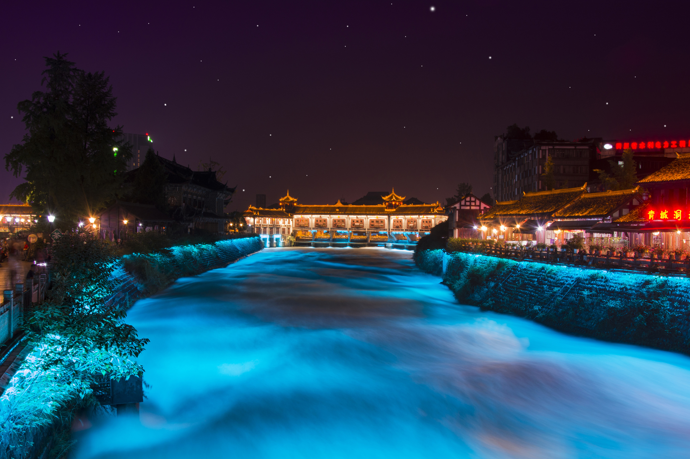
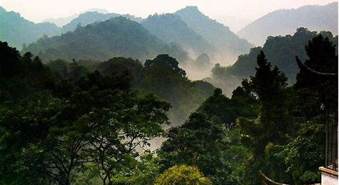

九眼桥
九眼桥，位于四川省成都市武侯区、锦江区一环路交界，古名宏济桥，又名镇江桥，又名镇江桥，由当时布政使余一龙所建。清乾隆五十三年，总督李世杰补修时，更名为“九眼桥” 。狭义上指桥梁，如今广义上是指九眼桥片区。九眼桥始建于明万历二十一年（1593年），系石栏杆、石桥面的大拱桥，长4宽3高3丈，下有9洞，得名“九眼桥”。传说张献忠败走四川时，曾将金银珠宝藏在九眼桥一带，20世纪30年代曾进行大规模的打捞，几经周折，从河底打捞起石牛和石鼓。1992年，因旧桥有碍泻洪而被拆除。现九眼桥桥距原址1.9千米。 于2001年11月完工。安顺廊桥位于九眼桥后方，常被误认为是九眼桥。九眼桥片区是“成都八大绝美夜景打卡地”之一，是成都夜场中的明珠。2023年5月，成都公交开行爱情主题火锅巴士专线，途径九眼桥等城市景点
.jpg)
都江堰
都江堰，位于四川省成都市都江堰市城西，坐落在成都平原西部的岷江上， 是由渠首枢纽（鱼嘴、飞沙堰、宝瓶口）、灌区各级引水渠道，各类工程建筑物和大中小型水库和塘堰等所构成的一个庞大的工程系统，渠首占地面积200余亩。 它担负着四川盆地中西部地区7市（地）40县（市、区）1130万余亩农田的灌溉、成都市多家重点企业和城市生活供水，以及防洪、发电、漂水、水产、养殖、林果、旅游、环保等多项目标综合服务，是四川省国民经济发展不可替代的水利基础设施。秦昭王后期（约公元前276年至251年），蜀郡守李冰总结了前人治水的经验，组织岷江两岸人民，修建都江堰。唐代，修建了飞沙堰。建国后，又修建了工业供水渠、外江闸、飞沙堰工业引水临时挡水闸。 为有效管理维护都江堰的运行，设立了堰官、岁修制度。都江堰是当今世界年代久远、唯一留存、以无坝引水为特征的宏大水利工程。它充分利用当地西北高、东南低的地理条件，根据江河出山口处特殊的地形、水脉、水势，乘势利导，无坝引水，自流灌溉，使堤防、分水、泄洪、排沙、控流相互依存，共为体系，保证了防洪、灌溉、水运和社会用水综合效益的充分发挥。它最伟大之处是建堰2250多年来经久不衰，而且发挥着都江堰是世界文化遗产、世界自然遗产的重要组成部分、世界灌溉工程遗产、全国重点文物保护单位、国家级风景名胜区、国家AAAAA级旅游景区。愈来愈大的效益。
青城山
青城山（Mount Qingcheng），世界文化遗产青城山-都江堰的主体景区、全国重点文物保护单位、国家重点风景名胜区、国家AAAAA级旅游景区、全真龙门派圣地，十大洞天之一，中国四大道教名山之一，五大仙山之一，成都十景之一。青城山位于四川省成都市都江堰市西南，东距成都市区68千米，处于都江堰水利工程西南10千米处。景区面积200平方千米，最高峰老君阁海拔1260米，青城山分为前山和后山，群峰环绕起伏、林木葱茏幽翠，享有“青城天下幽”的美誉。全山林木青翠，四季常青，诸峰环峙，状若城廓，故名青城山。丹梯千级，曲径通幽，以幽洁取胜。景区内外，天师洞和圆明宫幽静是青城山的一大特色。
